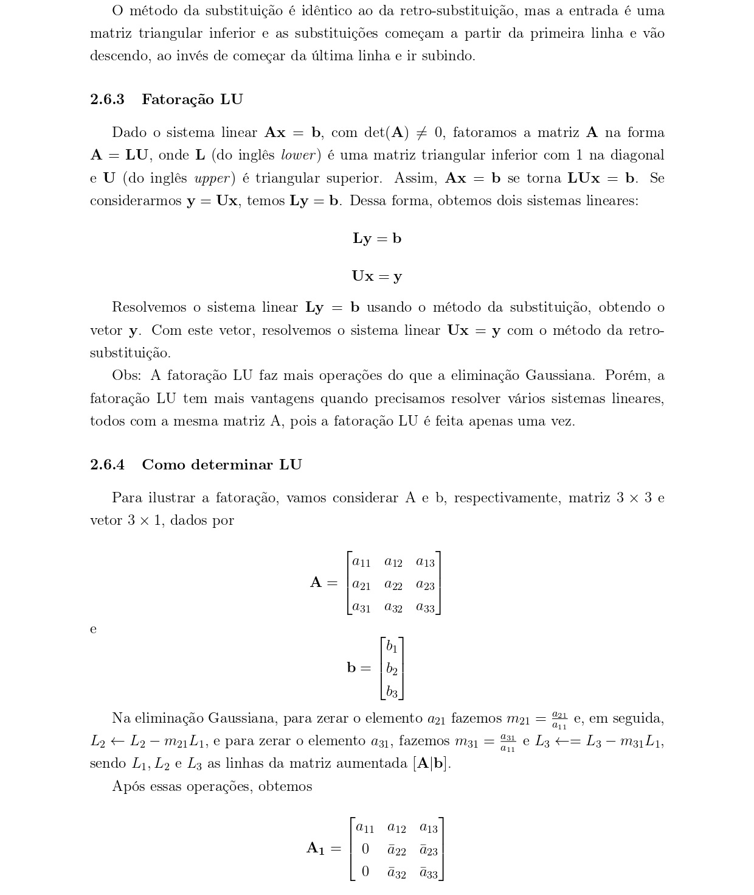
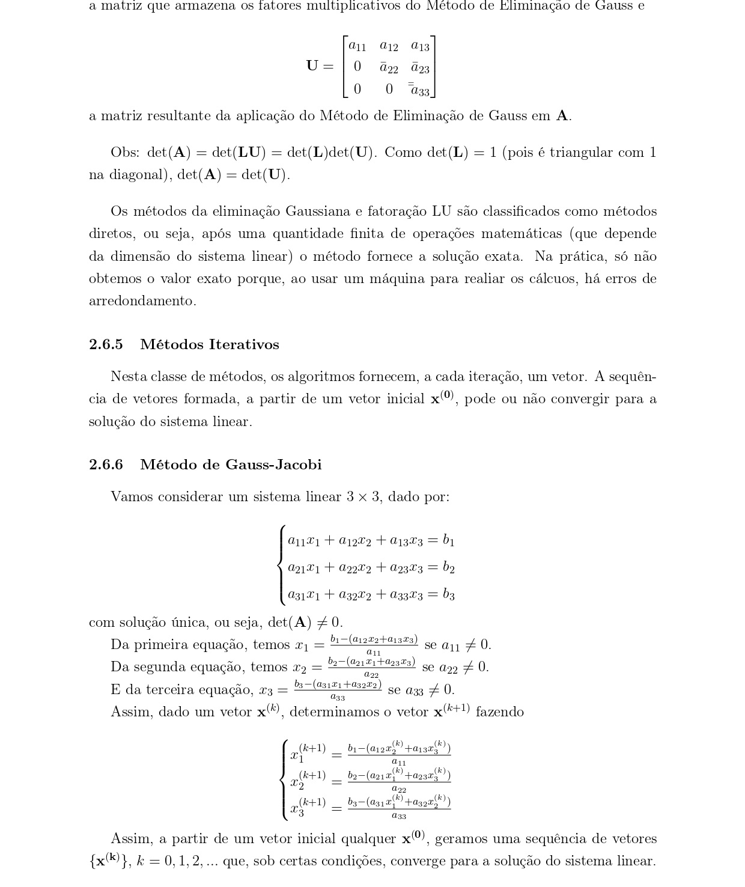
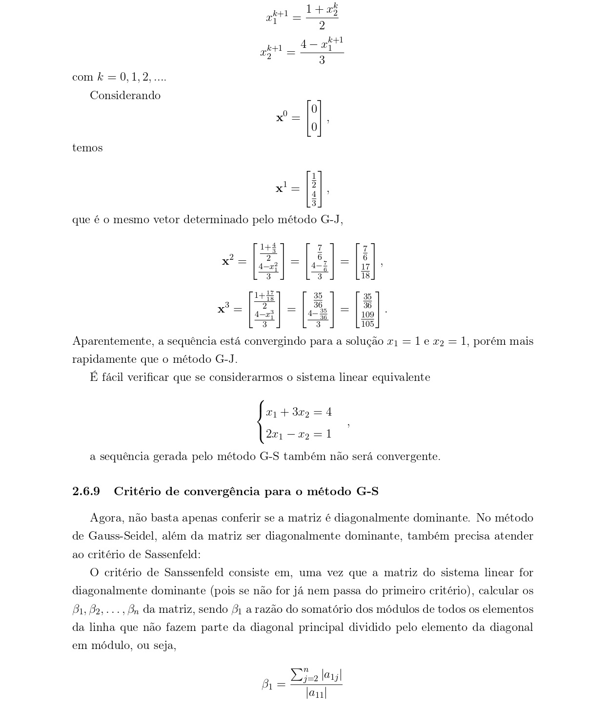

<div class="container" style="padding-top: 100px;">
  <div class="alert alert-danger only-mobile" role="alert">
    Esse site não foi feito para ser usado por este dispositivo, algumas funcionalidades podem ser comprometidas
  </div>

  <!--<h1>Sistemas Lineares</h1>
  <p>Seja A uma matriz NxN e b um vetor Nx1. Queremos determinar x, Nx1, tal que Ax=b, se det(A) &ne; 0</p>
  <h2>Método da eliminação Gaussiana</h2>
  <p>O método da eliminação Gaussiana, também chamado de método da adição, consiste em:</p>
  <p>1- A partir da primeira linha da matriz A, multiplicar a linha por um escalar e somar a linha inteira com a segunda linha, de forma que o primeiro elemento da segunda linha fique zerado.<span style="color: darkred;">Atenção, tudo que for feito nas linhas da Matriz A têm que er feito com os elementos do vetor b.</span></p>
  <p>2-Repetir o mesmo processo com a terceira linha, quarta linha, e assim por diante até a última linha, de forma que, com exceção da primeira linha, todos os elementos da primeira coluna fiquem zerados.</p>
  <p>3-Agora, você fará o mesmo que fez com a primeira linha, mas agora com a segunda linha (multiplicar com um escalar e somar com a terceira linha em diante) de modo que, com excessão das primeiras duas linhas, a segunda coluna toda fique zerada.</p>
  <p>4-Repetir todo esse processo até a última linha.O resultado final será uma matriz em que todos os elementos abaixo da diagonal principal estejam zerados.</p>
  <h3>Algoritmo da Retro-Substituição</h3>
  <p>Uma vez que você já aplicou a eliminação Gaussiana, é possível resolver o sistema linear por meio da retro-substituição.</p>
  <p>Cini a última linha (ou seja, a linha n) da matriz A possui um único elemento que não está zerado, que vamos chamar de x<sub>n</sub>, é possível descobrir o valor de x<sub>n</sub>. Depois, passaremos para a linha superior, n-1, nessa linha, teremos 2 elementos, mas o elemento na coluna n nós já sabemos o valor, então multiplicaremos pelo valor de x<sub>n</sub>e encontraremos x<sub>n-1</sub>.Esse processo se repetirá até a primeira linha e, com isso, acharemos todas as incógnitas.</p>
  <p>abaixo segue o algoritmo da retro-substituição:</p>
  <div style="text-align: center">
      
  </div>
  <p>O método da substituição é idêntica ao da retro-substituição, mas a entrada é uma matriz triangular inferior e as substituições começas a partir da segunda linha e vão descendo, ao invés de começar da penúltima linha e ir subindo.</p>
  <h2>Fatoração L.U</h2>
  <p>Dado o S.L Ax=b, com det(A) &ne; 0, fatoramos a matriz A na forma A=LU, on L (lower) é uma matriz triangular inferior com 1 na diagonal e U(upper) é uma matriz triangular superior.</p>
  <p>Assom, Ax=b se torna LUx=b. Se considerarmos Ux como y, fica Ly=b. Dessa forma, obtemos dois sistemas lineares:</p>
  <ul>
      <li>Ly=b</li>
      <li>Ux=y</li>
  </ul>
  <p>Resolvemos o S.L Ly=b usando o método da substituição, obtendo o vetor y. Com este vetor, resolvemos a S.L. Ux=y com o método da retro-substituição.</p>
  <p>Obs: a fatoração LU faz mais operações que a eliminação Gaussiana. Porém, a fatoração LU tem mais vantagens quando precisamos resolver vários sistemas lineares, todos com a mesma matriz A, pois a fatoração LU é feita uma única vez.</p>
  <h3>Como determinar L.U.</h3>
  <p>Sejam A =</p>
  <div>
      
  </div>
  <p>e b=</p>
  <div>
      
  </div>
  <div>
      
  </div>
  <div>
      
  </div>
  <div>
      
  </div>
  <div>
      
  </div>
  <div>
      
  </div>
  <p>Obs: det(A)=det(LU)=det(L).det(U). Como o det(L) é a matriz identidade, det(A) = det(U).</p>
  <p>Os métodos da eliminação Gaussiana e fatoração LU são classificados como métodos diretos, ou seja, após uma quantidade finita de operações matemáticas (que depende da dimensão do S.L) o algoritmo fornece a solução exata.</p>
  <h2>Métodos iterativos</h2>
  <p>Nesta classe de métodos, os algoritmos fornecem, a cada iteração, um vetor. A sequência de vetores formada, a partir de um vetor inicial x, pode ou não convergir para a solução S.L.</p>
  <h2>Método de Gauss-Jacobi</h2>
  <p>Vamos considerar um sistema linear 3x3, dado por:</p>
  <div style="text-align: center;">
      
  </div>
  <p>Com solução única.</p>
  <p>Da primeira equação:</p>
  <div style="text-align: center;">
      
  </div>
  <p>Da segunda equação:</p>
  <div style="text-align: center;">
      
  </div>
  <p>Da terceira equação:</p>
  <div style="text-align: center;">
      
  </div>
  <div>
      
  </div>
  <p>Com as expressões acima. Exemplo 1:</p>
  <div style="text-align: center;">
      
  </div>
  <p>Pegando (arbitrário) x<sub>0</sub>=</p>
  <div>
      
  </div>
  <p>temos:</p>
  <div>
      
  </div>
  <div>
      
  </div>
  <div>
      
  </div>
  <p>aparentemente, a sequência está convergindo para [1,1].</p>
  <p>exemplo 2:</p>
  <div style="text-align: center;">
      
  </div>
  <p>Pegando (arbitrário) x<sub>0</sub>=</p>
  <div>
      
  </div>
  <p>Temos:</p>
  <div>
      
  </div>
  <div>
      
  </div>
  <div>
      
  </div>
  <p>Dessa vez não converge para lugar nenhum, pois não atende aos critérios de convergência.</p>
  <h3>Critérios de convergência.</h3>
  <p>Para que o método de Gauss-Jacobi funcione, a matriz A do S.L prcisa ser diagonalmente dominante.</p>
  <p>O que é ser diagonalmente dominante? O maior elemento, em módulo, da linha precisa fazer parte da diagonal principal. Além disso, o domatório de todos os outros elementos da linha tem que ser menor, em módulo, que o elemento dominante.</p>
  <h2>Método de Gauss-Seidel</h2>
  <p>O método de Gauss-Seidel é idêntico ao método de Gauss-Jacobi, mas no meio de cada iteração, depois de calcular o , o novo valor já entra no cálculo de </p>
  <h3>Critério de convergência</h3>
  <p>gora, não basta apenas conferir se a matriz é diagonalmente dominante, por que os coeficientes do lado esquerdo da diagonal ja são os novos calculados. No método de Gauss-Seidel, além da matriz ser diagonalmente dominante, também precisa atender ao critério de Sassenfeld:</p>
  <h3>Critério de Sassenfeld</h3>
  <p>O critério de Sanssenfeld consiste em, uma vez que a matriz do S.L for diagonalmente dominante (pois, se não for,já nem passa do primeiro critério), calcular os  da matriz, sendo que n é o número de linhas. sendo que  é a razão do somatório de todos os elementos da linha que não fazem parte da diagonal principal sobre o elemento da diagonal.</p>
  <p> também será a razão de todos os elementos fora da diagonal sobre o elemento da diagonal, mas tem um porém. O elemento da coluna 1 será multiplicado por </p>
  <p> será a razão de todos os elementos fora da diagonal sobre o elemento da diagonal, mas agora, o elemento da coluna 1 será multiplicado por  e o elemento da coluna 2 será multiplicado por  e assim vai até o </p>
  <p>Esse critério será válido se todos os  forem menor que 1.</p>
  <h2>Teste de parada: G-J,G-S</h2>
  <p>Os métodos G-J e G-S fornecem uma sequência {{'{'}} x<sup>n</sup> {{'}'}}. Assim, para cada n, temos: Ax<sup>n</sup> &ne; b</p>
  <p>Seja então o vetor resíduo dado por r<sub>n</sub>=b-Ax<sub>n</sub>.</p>
  <p>Assim, dado 0 < &epsilon; << 1, calculamos:</p>
  <p>||r<sub>n</sub>|| = ||b-Ax<sub>n</sub>||. Se ||r<sub>n</sub>|| < &epsilon;, encontramos uma solução x<sub>n</sub> aproximada para Ax=b.</p>
  <p>Outro teste de parada pode ser: </p>-->

  <div style="text-align: center;">
    
    
    
    
    
    
    
    
    
    
  </div>
</div>
